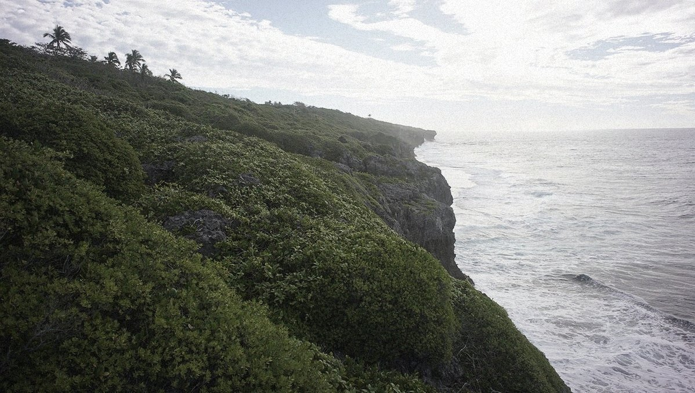

niue
Niue
Niue, pronounced 'New-ay', a rock in the Pacific, and one of the largest coral islands on earth. We sailed to Niue in mid July 2017. The water here is abnormally clear for its depth, water visibility can often reach 60 m or more as the coral and limestone filter out sediment in the water.
Humpback whales like to swim through the mooring fields at night. We didn't see them with our eyes, but heard them surfacing under the cover of darkness.
We wrote this post about our stay there: